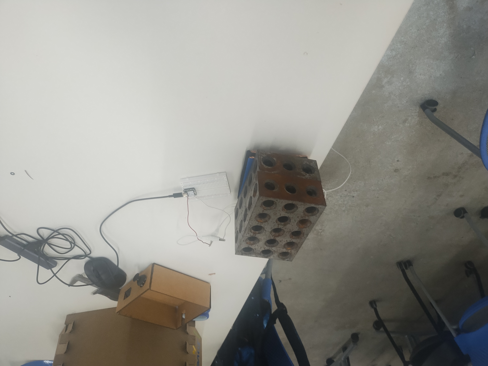
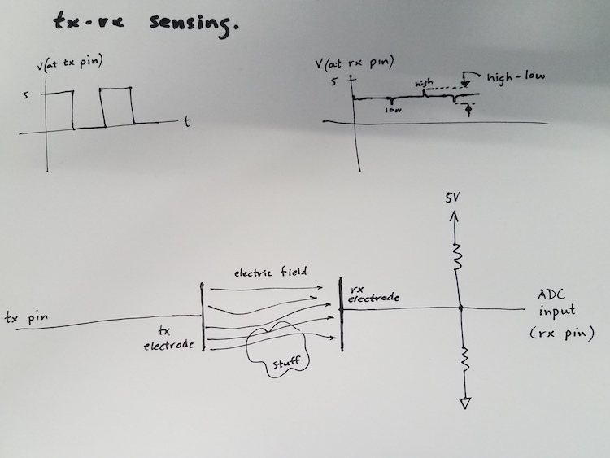
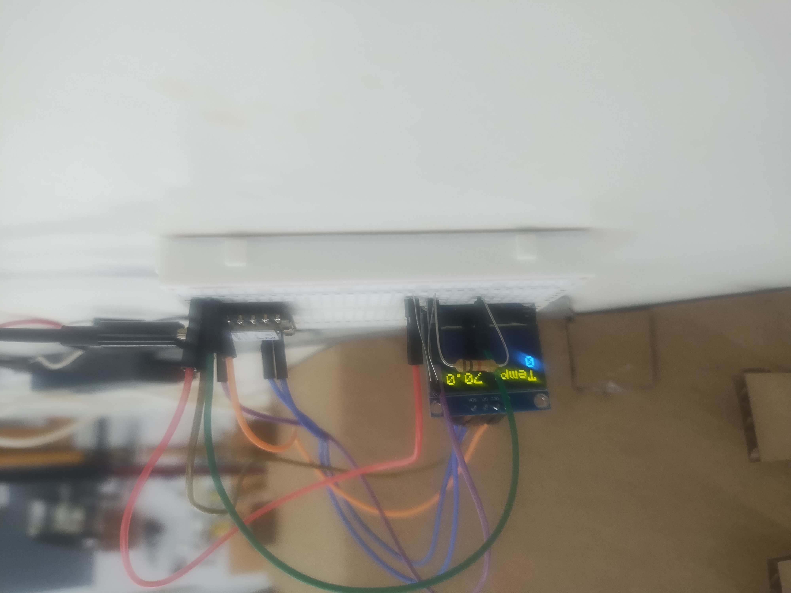
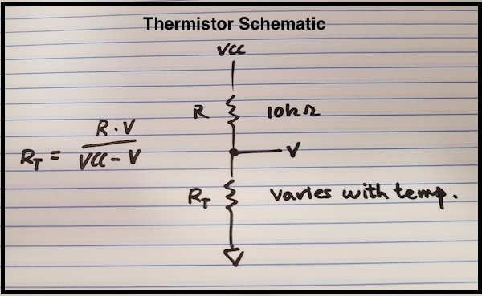
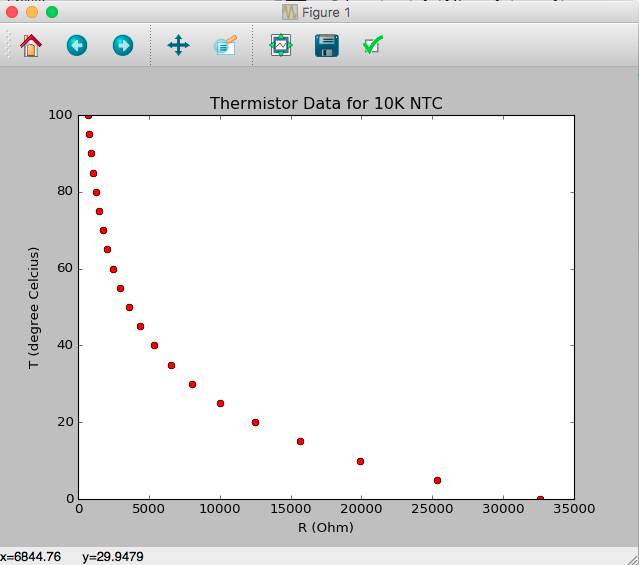

On this page
Week Documentation • Digital Fabrication
Sensors,
Calibration
& CNC
This week focused on designing custom sensing systems, collecting calibration data, and creating a manufacturing plan for an InventaKit organizer (CNC Assignment).
Concept design for the InventaKit organizer that will be manufactured using CNC fabrication methods.
Sensor Development
Capacitive Weight Sensor
A capacitive weight sensor was created using an ESP32 microcontroller to measure changes caused by applied force.
The sensor continuously records capacitance changes without using the delay() function. Instead, timer-based updates were implemented to allow the system to remain responsive.
The raw sensor readings were later converted into meaningful weight measurements through calibration.

Prototype of the custom capacitive weight measurement system.
Hardware
Weight Sensor Schematic

Data Analysis
Weight Calibration
Known weights were applied to the sensor while recording the raw values returned by the ESP32. The relationship between capacitance and weight was analyzed through calibration graphs to determine how sensor readings correspond to physical measurements. It was best determined to be Quartic using the R² consideration factor. Calibration was done in desmos graphing calculator

Programming
Weight Sensor Code
long result; //variable for the result of the tx_rx measurement.
int analog_pin = A0;
int tx_pin = D4;
void setup() {
pinMode(tx_pin, OUTPUT); //Pin 4 provides the voltage step
Serial.begin(9600);
}
void loop() {
long x = tx_rx();
result = (1.4154415*(pow(10,-16)))*pow(x,4) - (1.1409937*(pow(10,-10)))*pow(x,3) + (0.000034409583*(pow(x,2))) - (4.5992302*x) + 229827.16;
result*=(80/70);
Serial.println(result);
}
long tx_rx(){ // Function to execute rx_tx algorithm and return a value
// that depends on coupling of two electrodes.
// Value returned is a long integer.
int read_high;
int read_low;
int diff;
long int sum;
int N_samples = 100;
sum = 0;
for (int i = 0; i < N_samples; i++){
digitalWrite(tx_pin,HIGH); // Step the voltage high on conductor 1.
read_high = analogRead(analog_pin); // Measure response of conductor 2.
delayMicroseconds(2); // Delay to reach steady state.
digitalWrite(tx_pin,LOW); // Step the voltage to zero on conductor 1.
read_low = analogRead(analog_pin); // Measure response of conductor 2.
diff = read_high - read_low; // desired answer is the difference between high and low.
sum += diff; // Sums up N_samples of these measurements.
}
return sum;
}
Embedded System
Temperature Sensor + OLED
The second sensor system uses a thermistor to measure temperature and an OLED display to show live readings.
The system was designed using C++ classes to separate the temperature sensor logic from the display system.
Timer-based updates were used instead of delay() to manage sensor readings and screen refreshes.

Hardware
Temperature Schematic

Calibration
Temperature Data
The thermistor has a nonlinear relationship between resistance and temperature. Calibration was performed by comparing ADC values from the microcontroller against known temperatures.

Programming
Thermistor Code
#include <Wire.h>
#include <Adafruit_GFX.h>
#include <Adafruit_SSD1306.h>
#define SCREEN_WIDTH 128
#define SCREEN_HEIGHT 64
#define I2C_SDA D4
#define I2C_SCL D5
TwoWire I2C_screen = TwoWire(0);
Adafruit_SSD1306 display(SCREEN_WIDTH, SCREEN_HEIGHT, &I2C_screen, -1);
class Thermometer{
int ThermistorPin;
int Vo;
float R1 = 10000;
float R2, T;
float A = 3.354e-03;
float B = 2.5698e-4;
long prevMilli=0;
int delayTime = 0;
int lastT = getTemperature();
public:
Thermometer(int pin, int delay){
ThermistorPin = pin;
delayTime = delay;
}
float getTemperature(){
if(millis()-prevMilli >= delayTime){
prevMilli = millis();
Vo = analogRead(ThermistorPin);
R2 = R1 * 1/(4095.0 / (float)Vo - 1.0); //Calculate resistance of thermistor from voltage divider math.
T = (1.0 / (A + B*log(R2/R1) )); // Calculate temperature using datasheet formula.
T = T - 273.15;
lastT = T;
}
return lastT;
}
};
Thermometer term(A0,1000);
void setup() {
Serial.begin(9600);
I2C_screen.begin(I2C_SDA, I2C_SCL, 10000);
if (!display.begin(SSD1306_SWITCHCAPVCC, 0x3C)) {
Serial.println("SSD1306 allocation failed");
while (1);
}
display.setTextColor(SSD1306_WHITE);
display.setTextSize(2);
display.setCursor(0,0);
display.println(term.getTemperature());
display.display();
}
void loop() {
display.clearDisplay();
display.setCursor(0,0);
display.print("Temp: ");
display.println(term.getTemperature());
display.display();
}
Manufacturing
InventaKit CNC Organizer
For the CNC assignment I designed an organizer for the InventaKit ecosystem.
The organizer will store modules, sensors, cables, and electronic components while maintaining the modular design language of Inventa.
The design will be manufactured using CNC routing from sheet material such as plywood or OSB.